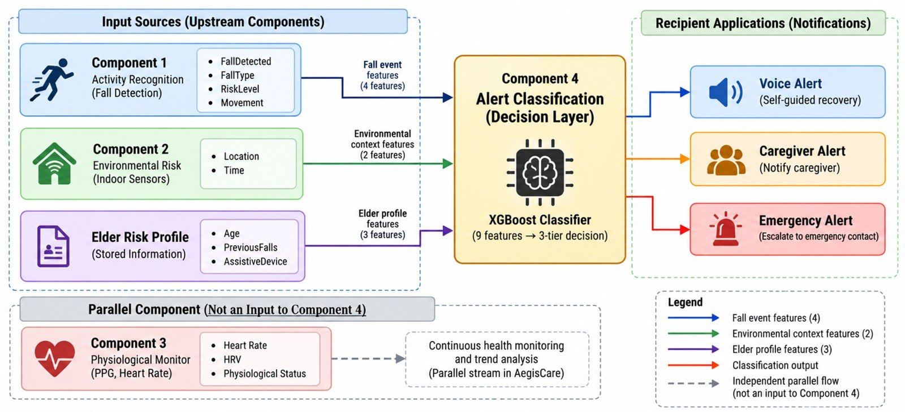

Intelligent Alert Classification
Turn every risk signal into the right intervention: voice warning, caregiver alert or emergency escalation.
 Built byMember 4: E D K M Kulathunga
Built byMember 4: E D K M KulathungaWhat this component is
This is the decision-making layer of the AegisCare elder-care monitoring system. Its purpose is to determine the appropriate response after a physical fall has been confirmed. It does not detect the fall itself. It decides who should respond and how urgently.
The component receives information from the fall detection component, the environmental context component and the elder risk profile. An XGBoost machine-learning classifier then selects one of three response levels: a voice alert for self-guided recovery, a caregiver alert to notify the registered caregiver, or an emergency alert to escalate to the emergency contact.
How it works
- Fall event features (4)From the fall detection component: FallDetected, FallType, RiskLevel and Movement.
- Environmental context features (2)From the environmental component: Location and Time.
- Elder risk profile features (3)From stored information: Age, PreviousFalls and AssistiveDevice.
- XGBoost classificationThe nine features are classified into one of three response levels.
- Alert deliveredVoice alert for self-guided recovery, caregiver alert, or emergency alert to the emergency contact.
The research gap
After the fall: who should respond, and how urgently?
Traditional fall-detection systems mainly answer “Did a fall occur?” However, after a confirmed fall, another important question remains: “Who should respond, and how urgently?” Many fall-detection systems focus on binary fall detection rather than on routing the response.
Component 4 addresses this problem through an automated, model-driven three-tier alert classification approach.
System diagram

Click to enlargeComponent 3 (vitals) runs as a parallel stream in this diagram and is not an input to this classifier.